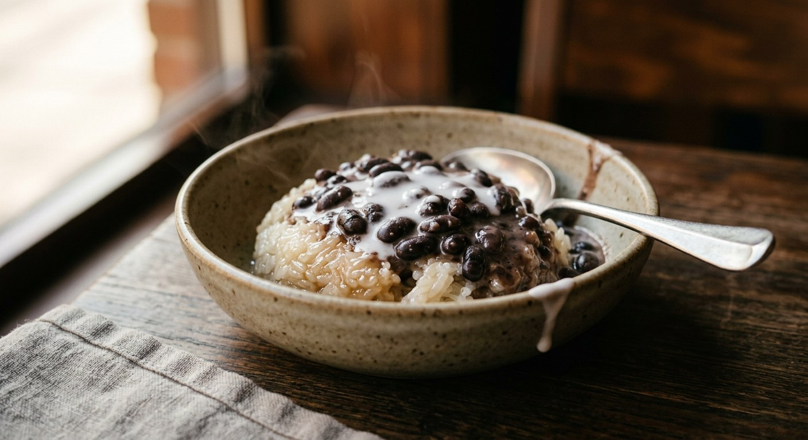

Glutinous rice steamed, then kneaded warm with sweetened coconut cream, under a ladle of black beans simmered in coconut milk and palm sugar — two pots cooked apart, finished with a dribble of salted cream. Thailand's morning-market dessert, served warm.

ข้าวเหนียว (khao niew, glutinous rice) and ถั่วดำ (tua dum, black beans) name the dish in full, and that pairing is exactly how it's made: two things cooked apart and combined only in the bowl. The rice half is ข้าวเหนียวมูน (khao niew mun) — steamed glutinous rice kneaded with sweetened coconut cream, the same rice that carries mango in khao niew mamuang. Here its partner is ถั่วดำแกงบวด, black beans simmered in coconut milk and palm sugar. The Phol Food Mafia cooking school's Kanom Thai recipe puts it plainly: mun rice eaten with black beans in coconut milk. Kapook adds that the bean pot doesn't need the rice at all — it's a dessert on its own, or poured over sago.
Six Thai sources we found agree on one structural rule, stated from opposite ends: two sweet things must be tuned to each other. Phol's recipe cuts the sugar in the mun rice — deliberately less than ordinary mango-sticky-rice mun, because the bean pot is already sweet. ครัวบ้านพิม's recipe makes the mirror move — cut the sugar in the bean pot to 80 g when it will sit on sweet mun rice. Each pot, by itself, is too sweet or too plain; the dish is the balance between them.
The ingredients stay stubbornly Thai. Four of the six sources name ข้าวเหนียวเขี้ยวงู (khao niew heiao ngu, "snake-fang" glutinous rice) as the rice. The beans are black turtle beans, soaked long and boiled soft, then simmered in the coconut milk until the sweetness works into the bean — ครัวบ้านพิม says about ten minutes, so bean and cream become one thing. Salt sits in every pot, rice and beans alike: the Thai sweet is always sweet-salty. And one Pantip cook's ritual no one else shares — toast the dry beans in the pan first, just until fragrant, before they go into the water.
| Thai | English | Amount |
|---|---|---|
| ถั่วดำต้มสุก | Cooked black beans (from ~400 g dried) | 800 g |
| กะทิ | Coconut milk (bean pot) | 1 kg |
| น้ำสะอาด | Water | 200 g |
| น้ำตาลปี๊บ | Palm sugar | 480 g |
| เกลือ | Salt (bean pot) | 10 g |
| ใบเตย | Pandan leaves, tied (optional; Pantip / ครัวบ้านพิม) | 2–3 leaves |
| ข้าวเหนียวเขี้ยวงู | Khao niew heiao ngu glutinous rice | 500 g |
| สารส้ม | Alum, for scrubbing the rice | 1 lump |
| กะทิ | Coconut milk (mun cream) | 250 g |
| น้ำตาลทราย | Sugar (mun cream) | 170 g |
| เกลือ | Salt (mun cream) | 10 g |
| หัวกะทิ | Coconut cream (topping) | 1½ cups |
| เกลือ | Salt (topping) | ¾ tsp |
| แป้งมัน + แป้งท้าวยายม่อม | Tapioca starch + arrowroot starch (topping) | 1 tsp each |
The home pot (Pantip): two cups of dry beans toasted in a dry pan until fragrant, soaked 3 hours, boiled about an hour with a pinch of salt, rinsed until the water runs clear — then simmered in 4 cups thin coconut milk (หางกะทิ) with pandan and 220 g real coconut sugar, finished with 2 cups head cream (หัวกะทิ) on a gentler heat; three cups of rice steamed in the rice cooker and mun with ¾ cup head cream, ¾ cup sugar and ¾ tsp salt. The small pot (Cookpad, Areerat): 250 g beans soaked 6 hours, boiled, then simmered in 3½ cups coconut cream with ½ cup palm sugar and ½ cup sugar; 250 g rice soaked 4 hours, mun with 1 cup coconut cream, 100 g sugar and ½ tsp salt, under the salted, starch-thickened topping. The no-soak pot (ครัวบ้านพิม): beans dropped into already-boiling water (three times their volume), 40 minutes, rinsed four times; 4 cups coconut milk with 1 cup head cream held back, ½ cup sugar, 100 g palm sugar, ½ tsp salt, five pandan leaves — and two eggs beaten in at the very end, off the heat. The quick pot (Kapook): one cup of beans, 2–3 cups coconut milk, one cup palm sugar, ½ tsp salt — soak 3 hours, boil 40 minutes, simmer in the milk with the sugar last, stirring gently so the cream never splits.
Which pot loses the sugar. Phol cuts the sugar in the mun rice because the beans are sweet; ครัวบ้านพิม cuts the sugar in the bean pot (to about 80 g) because the rice is sweet. Both agree the two pots must be tuned to each other — they just tune from opposite sides.
Toasting the beans. The Pantip recipe toasts the dry beans in the pan before soaking, for fragrance. No other source does. It costs one dry pan and five minutes.
Pandan. Pantip and ครัวบ้านพิม simmer the bean pot with pandan leaves (two or three, tied, removed later). Phol, Cookpad and Kapook skip it entirely. The classic Thai cream pot usually has pandan; here only half the sources bother.
Eggs. ครัวบ้านพิม beats two eggs into the bean pot at the very end, off the heat, so they set in soft strands through the cream. She is the only source who does. Nobody else mentions eggs.
Split coconut milk. Pantip and ครัวบ้านพิม build the pot from thin coconut milk (หางกะทิ) and finish with head cream (หัวกะทิ), the old way of controlling richness. Phol, Cookpad and Kapook use single-strength coconut milk throughout. The result is the same class of pot; the texture is creamier the split way.
The alum scrub. Phol scrubs the rice with alum for five minutes to whiten it; zarina99 soaks it in warm alum water for six hours. Cookpad and Pantip just wash the rice. Purely cosmetic — the rice tastes the same without it.
Soaking times. Beans: 3 hours (Phol, Kapook), 6 hours (Cookpad, zarina99) or none — ครัวบ้านพิม drops them into already-boiling water and still gets them soft in 40 minutes. Rice: 3 hours (Phol), 4 hours (Cookpad), 6 hours for old-crop rice (zarina99). Old beans cook slower than new; that explains more of the spread than the cooks do.
The topping. Cookpad thickens the salted coconut cream with tapioca and arrowroot starches so it sits on the rice like a lid. Most other sources pour plain salted cream, and Phol and Kapook skip the topping altogether. The salt, at least, everyone keeps.
This recipe is translated from the following Thai-language sources. Where they disagree, we've said so.
1. Phol Food Mafia — Kanom Thai cooking school, "Black Bean in Sweet Coconut Milk (ข้าวเหนียวถั่วดำ)" (the recipe used here; the less-sugar-in-the-mun-rice rule) — pholfoodmafia.com
2. Cookpad — "สูตร ข้าวเหนียวถั่วดำ" by Areerat Nernnam (the rice mun and the salted, starch-thickened topping used here) — cookpad.com
3. Pantip — "วิธีทำข้าวเหนียว(มูนจากหม้อหุงข้าว)กะทิถั่วดำ" (the toasted-bean, split-coconut-milk home pot; the cream-splitting warning) — pantip.com
4. ครัวบ้านพิม — "ข้าวเหนียวมูน-แกงบวดถั่วดำ" (the no-soak pot with eggs; the reduce-the-bean-sugar rule) — pim.in.th
5. Kapook Cooking — "แกงบวดถั่วดำ ถั่วดำต้มกะทิ" (the quick pot; the sago note) — cooking.kapook.com
6. zarina99 (Thai food forum) — "ข้าวเหนียวถั่วดำ" by chay (the warm-serving note; the alum soak) — zarina99.com